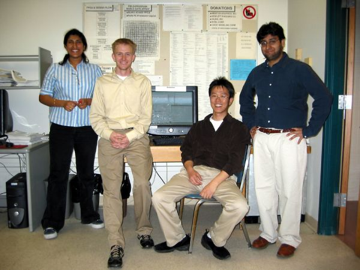

The Official Software Engineer Webpage

Real Ultimate Power
Hi, this site is all about software engineers, REAL SOFTWARE ENGINEERS. This site is awesome. My name is Nicholas and I can't stop thinking about software engineers. These guys are cool; and by cool, I mean totally sweet.
Facts:
1. Software engineers are mammals.
2. Software engineers document code ALL the time.
3. The purpose of the software engineer is to write requirements documents and implement iterative enhancement plans.
Tools and gear:
Computer Documents
Software Engineer Outfit
Testimonial:
Software engineers can design any application they want! Software engineers cut off heads ALL the time and don't even think twice about it. These guys are so crazy and awesome that they flip out ALL the time. I heard that there was this software engineer who was eating at a diner. And when some developer didn't document his code the software engineer killed the whole town. My friend Brian said that he saw a software engineer totally uppercut some kid just because the kid didn't write a test plan.
And that's what I call REAL Ultimate Power!!!!!!!!!!!!!!!!!!
If you don't believe that software engineers have REAL Ultimate Power you better get a life right now or they will stop developing software for you!!! It's an easy choice, if you ask me.
Software engineers are sooooooooooo sweet that I want to crap my pants. I can't believe it sometimes, but I feel it inside my heart. These guys are totally awesome and that's a fact. Software engineers are fast, smooth, cool, strong, powerful, and sweet. I can't wait to start object-oriented programming next year. I love software engineers with all of my body (including my pee pee).
Q and A:.
Q: Why is everyone so obsessed about software engineers?
A: Software engineers are the ultimate paradox. On the one hand they are really smart, but on the other hand, software engineers aren't totally toolish.
Q: I heard that software engineers are just programmers who pretend to have an important sounding job title. What's their problem?
A: Whoever told you that is a total liar. Just like other mammals, software engineers can be lame OR totally awesome.
Q: What do software engineers do when they're not documenting code or flipping out?
A: Most of their free time is spent testing, but sometime they burn stuff. (Ask Hardy if you don't believe me.)
This is a picture of my friend JP showing off.
He's a lot older than me and has a job with Microsoft,
which is bragable.
The original REAL ULTIMATE POWER.